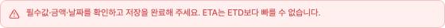
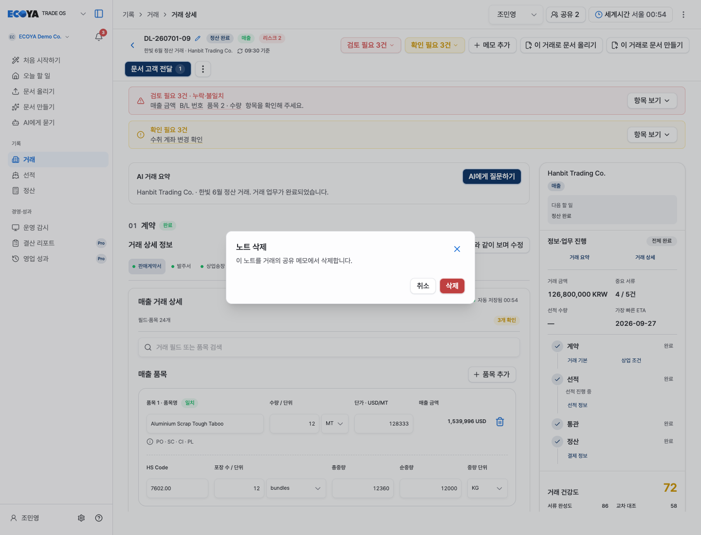
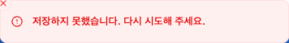
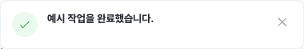
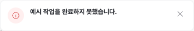
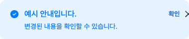

한 줄 안내
사용 화면 ↗아이콘 + 본문

현재 구현된 7개 유형 · 22개 실제 예시
해당 화면 안에 유지되는 안내. 본문·설명·액션·추가 정보의 조합으로 구분합니다.
처음에는 한 줄만 표시하고, 필요한 설명을 펼쳐 봅니다.
관련 입력칸 바로 아래에 표시합니다.
건수 버튼을 누르면 확인할 항목이 열립니다.
자동 저장·분석의 진행 상태와 결과를 보여줍니다.
실행하기 전에 취소하거나 진행할 수 있습니다.
제목 / 설명 / 취소·삭제

화면 위에 잠깐 표시됩니다. 오류의 유지 시간은 현재 구현별로 다릅니다.
상단 중앙 · 아이콘 / 문구 / 닫기
실제 컴포넌트 · 예시 메시지
상단 중앙 · 오류 / 문구 / 닫기

실제 컴포넌트 · 예시 메시지
상단 중앙 · 완료 카드 / 닫기

실제 컴포넌트 · 예시 메시지
상단 중앙 · 오류 카드 / 닫기

실제 컴포넌트 · 예시 메시지
상단 중앙 · 설명 / 액션 / 닫기

실제 컴포넌트 · 예시 메시지